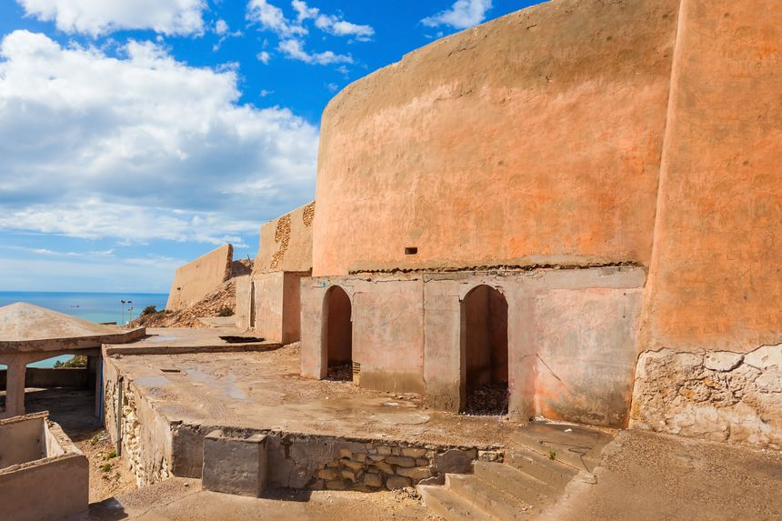
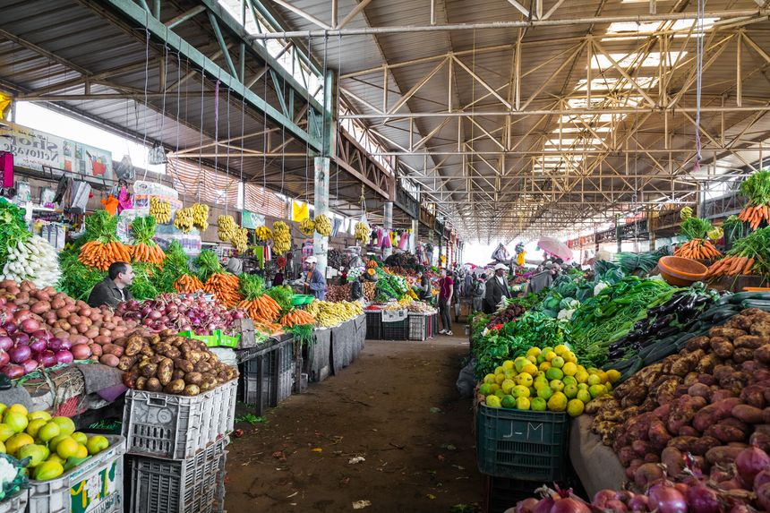
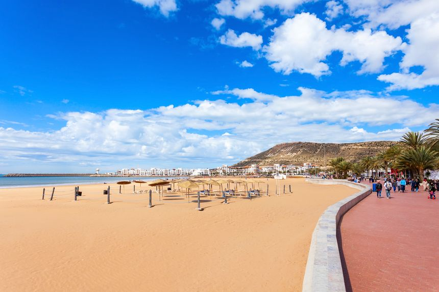

La Kasbah
C’est l’un des rares vestiges historiques reconstruits après le passage du tremblement de
terre de 1960. Cette forteresse érigée sous le règne du roi Mohammed Ech-Cheikh au XVIe siècle servait
autrefois à protéger la ville des invasions, ville qui se situait alors à l’intérieur des remparts.
Aujourd’hui, plus d’habitations, on peut seulement admirer les murs d’enceinte, et les portes
reconstruites à l’identique. Le site culminant à 236 mètres permet également d’apprécier un beau
point de vue sur le port et la baie d’Agadir.

Le souk El Had
Incontournable, le souk d’Agadir est l’un des plus grands du Maghreb ! Une fois à l’intérieur, on
est tout simplement éblouis par tant de couleurs. Des étals débordant de fruits et légumes, des
pyramides d’épices dans les teintes rouges, jaunes, et ocre, sans oublier les objets issus de
l’artisanat local : maroquinerie, tapis, lampes en fer forgé, bijoux, cuir… on ne sait tout
simplement plus où donner de la tête. Comme dans la plupart des souks du Maroc, le prix n’est
pas affiché, il faut donc négocier. Cela fait partie du charme local.

La Marina
La renommée d’Agadir tient principalement sur son superbe front de mer bordé par un large
croissant de sable. En plus de pouvoir profiter de la plage et du soleil, Agadir est également
réputée pour ses parcours de golf. Comme toute station balnéaire qui se respecte, elle offre un
beau panel d’activités nautiques : voile, surf, paddle, jet-ski, planche à voile, ski nautique…de quoi
faire le plein de sensations ! La Marina est fréquentée bien sûr par les touristes, mais également
par les locaux qui aiment venir le soir en famille profiter d’une promenade à la fraîche, ou
s’attabler à l’un des nombreux cafés et restaurants face à l’océan.